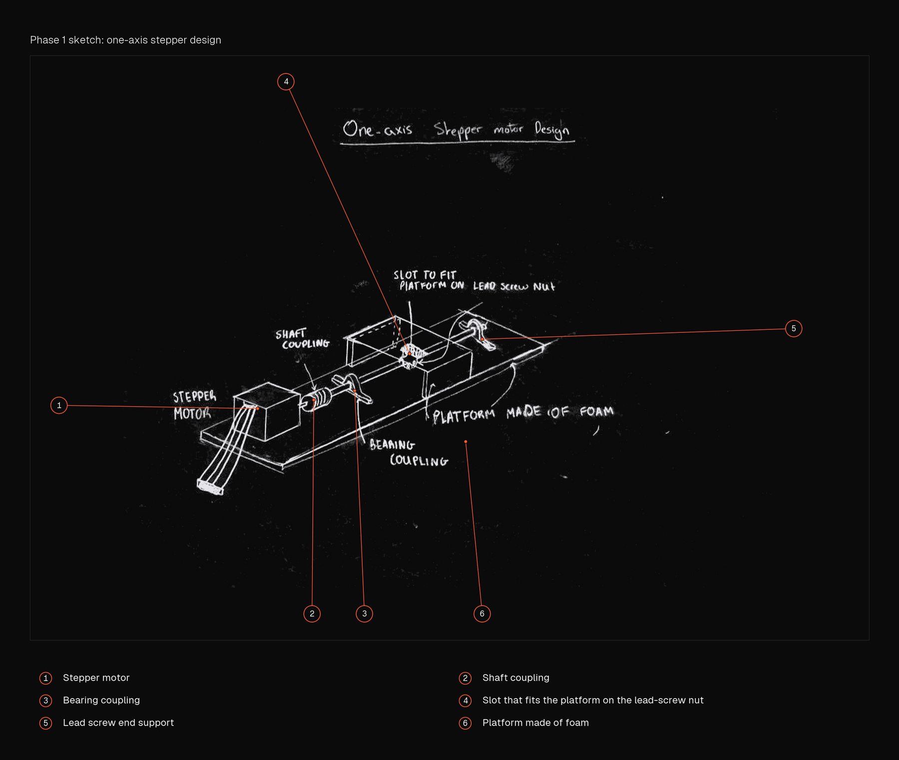
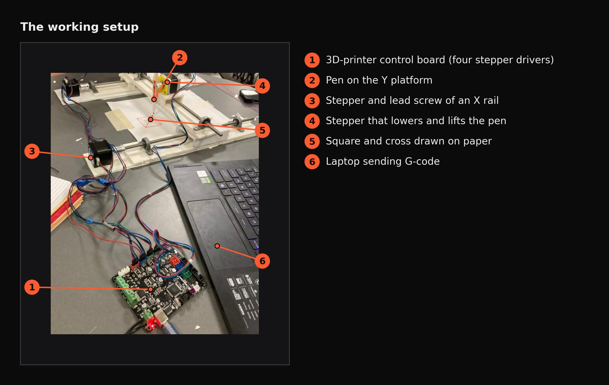
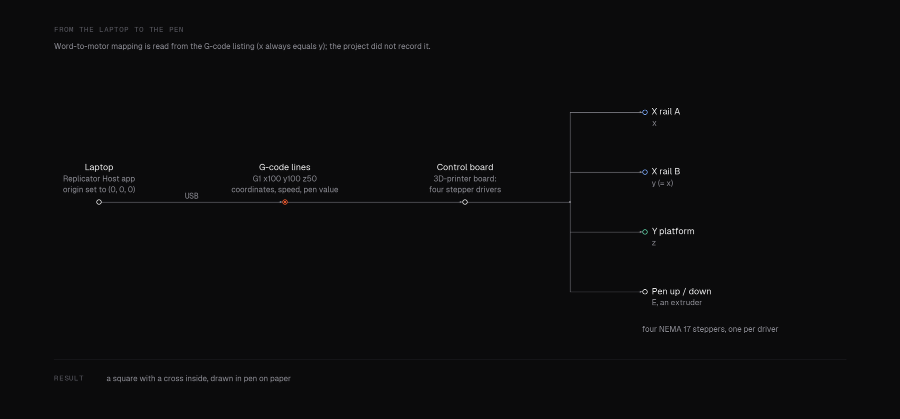
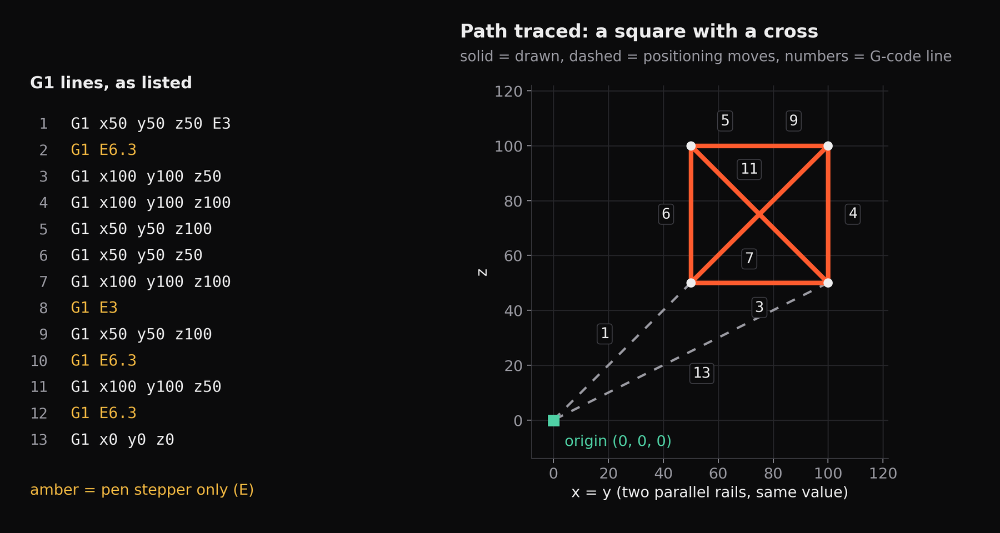

Hardware · Oct 2022 · Built and tested
Two-axis pen plotter
Stepper-driven X and Y axes, and a pen that lifts, drawing from G-code.

- 2phases: one axis, then two
- 4steppers a single printer board can drive
- NEMA 17stepper motor throughout
- G-codesent from a laptop to the board
ME360 project in two phases: first a single axis that moves a platform back and forth, then two axes and a pen that lowers onto paper to draw a square with a cross inside it.
01Phase 1: one axis
Class had covered how a stepper motor turns a screw, and how a lead-screw nut moves forward and back when it is stopped from rotating. The task was to use the supplied materials to move a platform back and forward in a loop. I sketched the solution on paper first, to save time and avoid wasting material, then drove the motor from an Arduino by switching its signals on and off to produce rotation.


02Phase 2: two axes and a pen
A 3D-printer control board takes over. It can drive four stepper motors and one extruder, which is exactly what a plotter with a lifting pen needs. Two parallel rails, one from each joined team, act as the X axes, with a platform on top as Y. A stepper on the Y platform lowers the pen to the paper and lifts it. The two rails get independent signals with identical coordinate values so they move together, and the pen is treated as an extruder, which turns a pen lift into one more value in the G-code.




03Driving it
The rails are aligned and set to (0, 0, 0). The Replicator Host app is launched and (0, 0, 0) assigned as the origin. Then lines of G-code give the coordinates, the speed and whether the pen is retracted, and the board executes them.


04What it fed into
The board, the stepper wiring and the G-code approach carried straight into the CNC mill that followed, which added a third axis to the same machine.